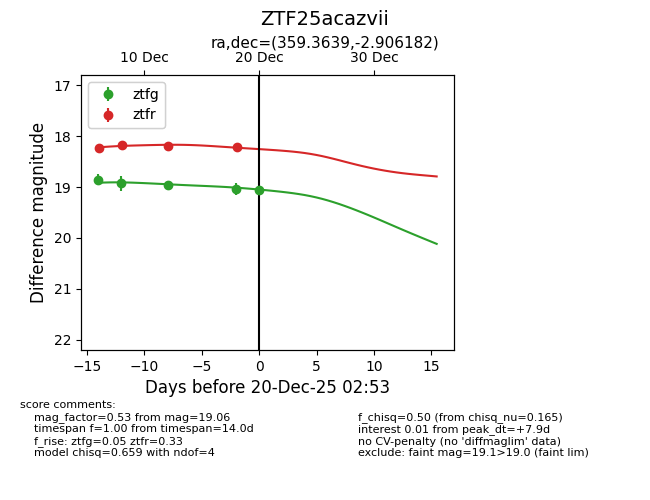
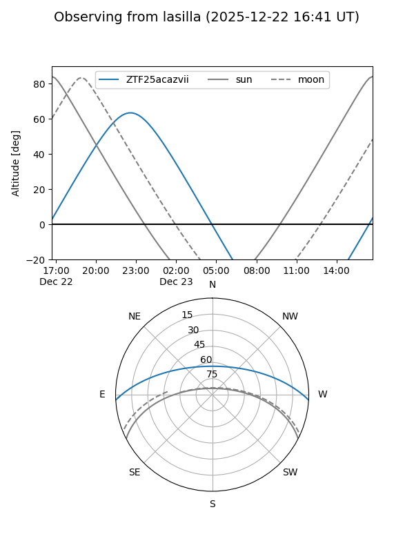
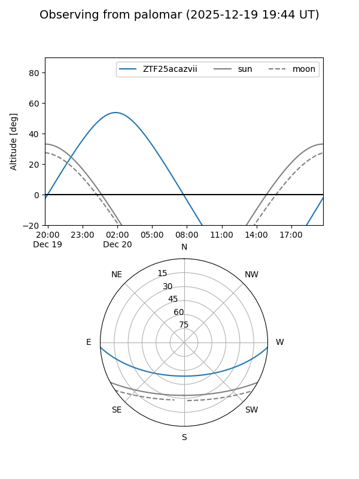
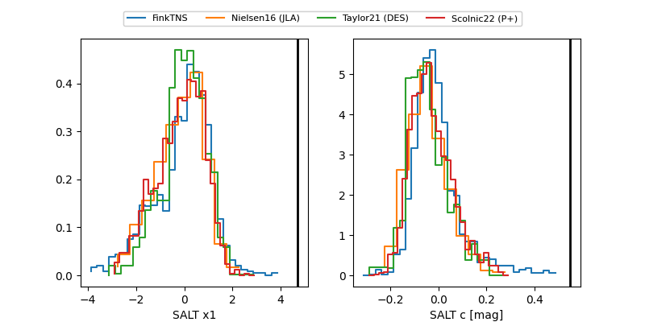

ZTF25acazvii
Target ZTF25acazvii at 2025-12-20 02:54
Aliases and brokers:
FINK: fink-portal.org/ZTF25acazvii
Lasair: lasair-ztf.lsst.ac.uk/objects/ZTF25acazvii
ALeRCE: alerce.online/object/ZTF25acazvii
alt names
ZTF25acazvii (ztf,fink_ztf)
Coordinates:
equatorial (ra, dec) = 359.3639,-2.90618
equatorial (HMS+DMS) = 23:57:27.35,-02:54:22.25
galactic (l, b) = (92.5598,-62.55075)
Flags:
Photometry:
last ztfg=19.06, ztfr=18.21
5 ztfg, 4 ztfr detections
Lightcurve

Visibility


Additional plots
